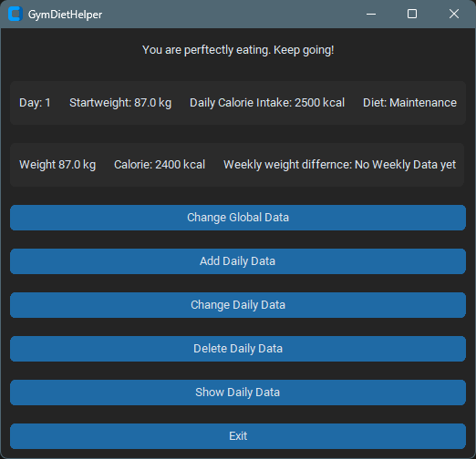

Gym Diet Helper
Keywords: Python Tkinter Project
The code for this project is available on Github
The idea for this project came from one of my hobbies, powerlifting and bodybuilding.
The combination of both is called powerbuilding.
I wanted an application to track my weight, calorie intake, and more.
In the end, I developed a program that allows users to input their weight, daily calorie intake, and calories burned.
It also considers their diet goal, bulking, cutting, or maintaining.
Based on these data points, the program provides recommendations for adjusting the diet and automatically modifies the daily calorie intake as needed.
For example, if you're cutting but not losing weight despite staying under your daily calorie limit, the program will suggest reducing your calorie intake further.
Initially, I built a terminal-based version, which worked well but wasn't very user-friendly.
To improve usability, I decided to create a GUI using customtkinter.
Overall, I'm happy with the result, though I had to rely on dialog boxes for input and displaying information, which I'm not completely satisfied with.
I might improve that in the future.

As you can see in the picture, there are several buttons with different functions, which are mostly self-explanatory.
For this project, saving data is an essential feature.
To achieve this, I used pickle for the first time. It's a great tool for saving data locally.
Conclusion
This project was a lot of fun to work on, and I plan to continue improving it to make it more user-friendly.
Right now, adding new features isn't my main focus. Instead, I want to enhance the GUI, make it more responsive, and replace the dialog boxes for a better user experience.
Changes to the project since this site is online
- New Button, to delete all data